Time Keeping
Timekeeping
The user can use the Timekeeping button to fill the timesheet data by adding time slices. A time slice is the time duration for an activity including lunch. A timesheet is composed of multiple continuous time slices that complete the timesheet for a day's work. As a field technician, the user must record the time the user spent on each task. The user can create time slices in the system to support the work the user has completed in the day.
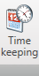
Adding a Time Slice
Users can add time slices for themselves or their crews by navigating to the Timekeeping tab in the IWMS Client application.
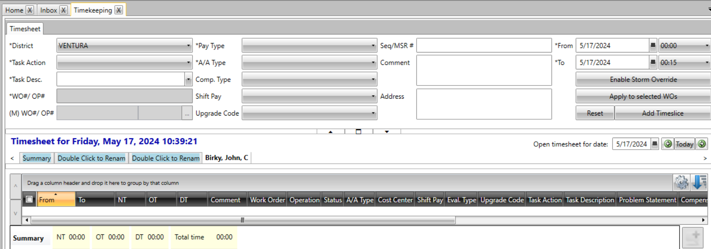
Steps
The user needs to fill in the fields below to create a time slice:
AOR Dropdown: Select an AOR
Task Action Dropdown: Select a task action. Based on the task action the user selects, the Task Desc. list is populated.
Task Desc Dropdown: Select a task description. Based on the task description The user selects, a work order number, if associated, is populated in the WO#/OP# field. Else, The user must enter the work order number manually in the (M) WO#/OP# field. If a work order number is entered manually, it means that the entered work order number is not present in the database and is highlighted in the timesheet.
WO#/OP# field: Type a work order number in the (M) WO#/OP# box.
Pay Type Dropdown: Select a pay type. Based on the pay type the user selects, the A/A Type list is populated.
A/A Type Dropdown: Select an A/A Type. Based on the pay type the user selects, the Comp Type list is populated. The Comp Type list is populated when the options selected in the Pay Type list and the A/A Type list are related to compensation.
From field: Enter a date, and then in the corresponding time list, select a start time for the time slice. By default, today's date is selected.
To field: Enter a date, and then in the corresponding time list, select the end time for the time slice.
Comp Type: Enter the Compensation Type.
Shift Pay: This is either SW or GR.
Upgrade code: This is not a compulsory entry. Any timekeeping screen that uses an upgrade code list contains upgrade codes assigned to the logged on role if the upgrade code list is editable.
seq (MSR#): Enter the Meter Service Request number.
Comment: The user can add any remarks here regarding the Timeslice.
Address: Enter The Precise Address here
- Click on the Add Time Slice button.
Observe that a time slice was created as shown below:

If The user is a supervisor creating a time slice for the crew,
then.
i. The Select users page will be displayed.
ii. Select the check boxes corresponding to the crew members to be - assigned the time slice.
iii. Click OK.
Next to the Add Time Slice button, there is Enable storm override button, Apply to selected WOs button and Reset buttons. Below are their functions:
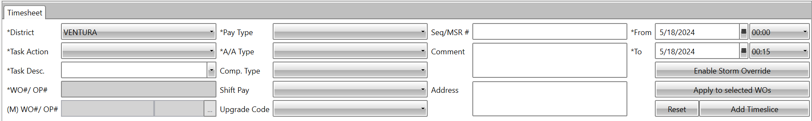
Enable storm override.
The Enable Storm Override is a mode. When this mode is switched on, the user working on any task is applied the accounting code as per the Storm Mode. This means, if the user is working on a specified task and before that task is complete, if the Storm mode is enabled, though The user continues to work on the same task, in the timesheet that task is applied the accounting code as per Storm mode.
Enable the Storm Override button.
-
Click on the Storm override button.
-
The following screen will appear where The user can select either the Standing Work Orders, Capital Work Orders, and Internal Work Orders\ 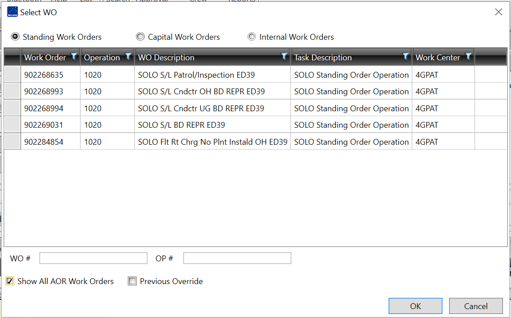
-
Select Show all AOR work orders checkbox to show the full list of available work orders in the selected category. If there are any previous Overrides, select the Previous Override checkbox to view them.
-
Select a work order on the list (this will auto fill the WO# and OP#) or fill in a specific work order in the WO# and OP# input box.
-
Select OK to override the work orders in the list.
-
The Storm override button changes to Disable Storm Override, then the task will appear under the summary tab showing that overriding is set for WO#.
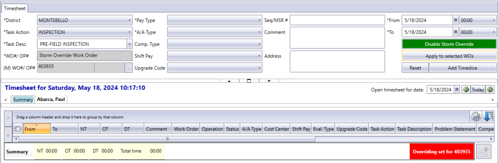
Apply to selected WOs.
The user can use this feature to assign the same work order (WO) number to various time slices in a timesheet. The user should have an existing timesheet before proceeding the following steps.
Steps
To apply the same work order number to selected WOs:
-
In a timesheet grid, select the check boxes corresponding to the time slices to be assigned the same work order number. The user can choose a date range for the timesheets from the open timesheet for date:
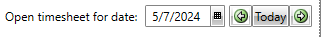
-
In the District list, select an area.
-
In the Task Action list, select a task action.
-
Based on the task action the user selects, the Task Desc list is populated. In the Task Desc list, select a task description.
-
The (M) WO#/OP# box is made available. In the (M) WO#/OP# box, type a new work order number.
-
Click Apply to selected WOs.
The work order number is assigned to all the time slices.
Reset
Reset button clears every data that the user had previously entered when creating a time slice.
Copy and paste.
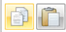
The user can copy and paste time slices in the same timesheet or in the
timesheets of other crew members. The user can utilize the copy and
paste buttons to make work easier. After using the copy button, only
then is the paste button enabled.
Delete
This button allows The user to delete an entry that the user has previously searched. To use the delete button, select the entry at the checkbox adjacent to the entry and then click on the red delete button found at the bottom left of the page as seen below.
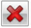
Copy crew.
Allows the user to share the time slice with the crew members. Once the user copies the crew in a timesheet, the timesheet will be applied to all the crew members.

Add Comment
Allows users to add a comment regarding the Timeslice/timesheet created.
Save and validate.
The user can use the Save and Validate icon to save the time slices that the user has added in the timesheet and check for any conflicts that need correction. If any conflicts exist in the timesheet, the timesheet cannot be released.
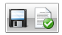
Save and release
The user can use the Save and Release icon to submit the timesheet for approval. A Supervisor can approve the timesheet.
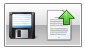
Adding Meals
Users can add mealtime slices to their timesheets to account for additional effort beyond mandatory work hours. Multiple meal timeslices can be added within a workday.
Create add a meal
-
Select the checkbox corresponding to a time slice in the timesheet.
-
The Add meal icon is made available.
-
Click the Add meal icon.
-
The Meal dialog box is displayed. 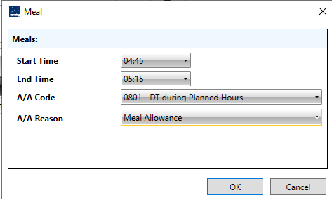
-
In the Start time list, select a start time.
-
In the End time list, select the end time.
-
In the A/A Code list, select an A/A code.
-
Based on the selection, the A/A Reason list is populated.
-
In the A/A Reason list, select A/A reason.
-
Click OK.
The meal Timeslice is displayed in the timesheet.
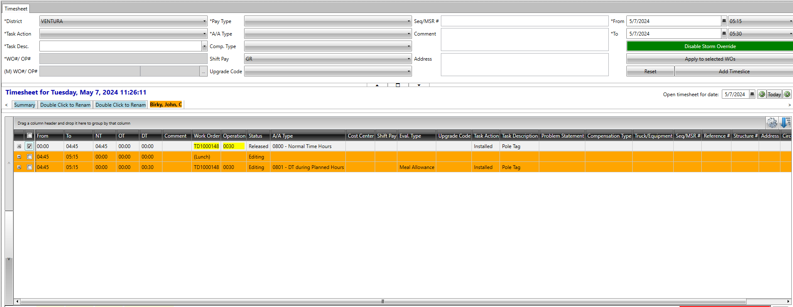
Adding Lunch
The IWMS Client lets The user add a special slice for the lunch break to the timesheet. This Lunch slice isn't tied to any specific billing code or payment. There can only be one Lunch slice per workday.
Add Lunch.
- Open the IWMS Client application and go to the Timekeeping section.
-
Click the checkbox next to the time slice the user wants to add Lunch to. This will enable the Add Lunch icon.
-
Click the Add Lunch icon.
Lunch will now be displayed as a separate slice in the timesheet.
Print & Print Queue
The user can use the Print icon to print a work item such as a work order, trouble order, notification, asset, or MSR to a window or to a printer. The user can print a work item to the following formats: .docx, .doc, .pdf, and .jpeg.
If the printer is offline then the print job will be sent to the print queue. The printer must show offline for the print job to go to the print queue.
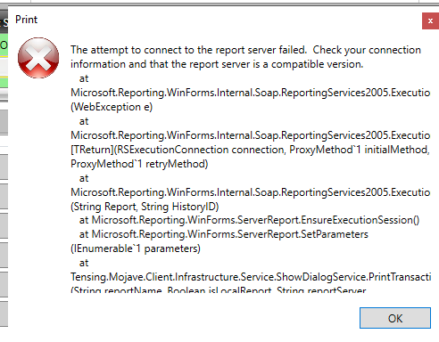
User can however print and view the print queue page when printing a map
as seen below:
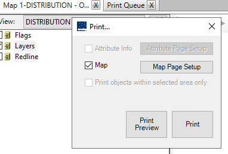
Print queue accommodates two types of files, .doc and .pdf files.
The files can be viewed in the preview window one file at a time. Only
the first page of the file will be previewed, and the user has the
option of printing the file or deleting it.
Bluetooth
This button allows the user to send messages via Bluetooth.
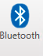
Help
The user can use the Help icon to click to display the topics in the IWMS Client application. The help button contains a drop down with the Help, Troubleshoot and About choices.
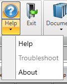
Exit
Exit button allows the user to close the application.
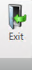